第11章 中子星和黑洞 物质的奇妙状态
有关恒星演化的研究让我们发现了一些非常不同寻常和出乎预料的天体。红巨星、白矮星，以及超新星当然代表着物质的极端状态，它们对于地球上的我们来说完全陌生。然而恒星演化——尤其是在终点，当恒星死亡时——可能会带来更加诡异的结果。其中最为奇异的就是比太阳质量大得多的恒星的灾难性内爆——爆发所带来的产物。
中子星和黑洞属于宇宙中最奇异的天体。它们是大质量恒星生命的终点，它们奇怪的属性令人难以想象。然而理论和观测似乎一致表明，无论你是否认为这是异想天开，它们确实存在于太空中。
22.1 中子星
在第10章中我们看到，一些恒星可以成为剧烈爆发的超新星，将碎片散播在星际空间的广袤区域中。超新星爆发后还会留下什么呢？是整个前身（母）星被完全炸成碎片，并散布在星际空间，还是会存留下其中的一部分呢？
恒星遗迹
大多数天文学家认为，I型（碳爆燃）超新星爆发后，不太可能留下任何中央残骸，因为整颗恒星都被爆发摧毁了。然而，II型超新星涉及一颗大质量恒星铁核的迅速坍缩以及随之而来的反弹，理论计算表明，恒星的一部分可能会被存留下来。爆发摧毁了母星，但可能会在其中心留下一个已极度压缩的微小遗迹——这是一颗恒星的内核在恒星演化停滞之后的所有存留。白矮星是小质量恒星演化终点的致密产物，它是恒星遗迹的又一例证。(9.3节) 即使以白矮星的高密度为标准，这一被严重压缩的内核中的物质仍然处于一种非常奇怪的状态，不同于我们在地球上能找到（或创造）的任何东西。
回忆第10章，在大质量恒星向内迅速坍缩的瞬间，即形成超新星之前，恒星核心的电子猛烈地撞入质子，形成中子和中微子。(10.2节) 中微子以光速或接近光速离开诞生地，加速了中子核心的坍缩，直到中子互相接触。此刻，核心的中央部分向外反弹，形成强大的冲击波，向外横扫整颗恒星，将物质猛烈地驱向太空。
这里的关键是，冲击波并非始于坍缩核心的正中央。虽然冲击波摧毁了恒星的其他部分，但发生“反弹”的核心内部仍完好无损。这也是在经历了超新星爆发的巨大力量后，恒星留下的仅有物质。由于其内部的所有核反应都永远地停止了，所以它算不上任何真正意义上的恒星，但研究人员仍把核心的这种遗迹形象地称为中子星。
中子星的性质
中子星的个头非常小，质量却非常大。它完全由中子构成，被紧密地挤压在一个直径20km的球体中。一个典型的中子星不会比一颗小型小行星或陆地城市大多少（见图22.1），但它比太阳还要重。这么巨大的质量压缩在如此小的体积内，使中子星的密度大得惊人。它的平均密度能达到 1017 甚至 1018 kg/m3，几乎是白矮星密度的10亿倍。（相比之下，一个正常原子核的密度约为 3×1017 kg/m3）。中子星的一小撮物质可能就有1亿吨重，这大约是大型陆地山脉的重量。某种意义上，我们可以认为中子星是一个巨大的原子核，它的原子质量约为 1057！正因为密度如此之高，中子才可以抵制进一步的压缩，而不像中子星中的电子（在低得多的密度时）所经历的那样——中子的简并压可以使中子星保持平衡。

中子星并不比地球上的许多主要城市大多少。参看这种充满奇幻的对比，一颗典型的中子星坐落在纽约曼哈顿岛上。[美国国家航空航天局 (NASA)]
中子星是固体。假设如果能找到一颗温度足够低的中子星，你甚至可以想象站在它的上面。然而，要这样做并不容易，因为中子星的引力极其强大。一个70kg (150lb) 的成年人在它表面受到的重力等同于地球表面10万亿千克 (100亿吨) 物体的重力。中子星引力产生的巨大重力会使你变得比一张纸还要薄！
除了质量大、体积小以外，新形成的中子星还有两个非常重要的属性。首先，它们的自转速度非常快，自转周期不到1s。这是角动量守恒定律产生的直接结果，这条定律告诉我们，任何旋转的物体在收缩时一定会快速自转。即使它的前身星最初的自转速度很慢（比如与许多主序上部的恒星一样，几星期才自转一圈），当它的直径达到20km时，也会一秒钟自转几圈。
其次，新生的中子星有很强的磁场。在核坍缩过程中，收缩的物质将磁场线紧密地挤在一起，前身星的原初磁场被放大，因而形成一个比地球磁场强上万亿倍的磁场。（详细说明8-1）
理论表明，中子星会及时地将能量向太空中辐射，它的自转速度会越来越缓慢，磁场也将减少。然而，在诞生后的几百万年中，以上两个属性将是发现和研究这一奇特天体的主要手段。
概念理解检查
❓ 所有的超新星都会形成中子星吗？
22.2 脉冲星
我们能确定与中子星一样奇特的天体真的存在吗？答案是非常确定的YES。首次观测到中子星是在1967年。当时，剑桥大学的研究生约瑟琳·贝尔揭示了一个惊人的发现，她观测到一个天体以快速脉冲的形式快速地发射射电波。每个脉冲包含一个0.01s的射电爆发，而后是平寂；然后在1.34s后，另一个脉冲会到来。脉冲之间的时间间隔惊人地一致。事实上，这一时间间隔非常精确，重复的射电辐射可以用作精确的计时。图22.2记录了贝尔发现的脉冲天体发出的部分射电辐射。
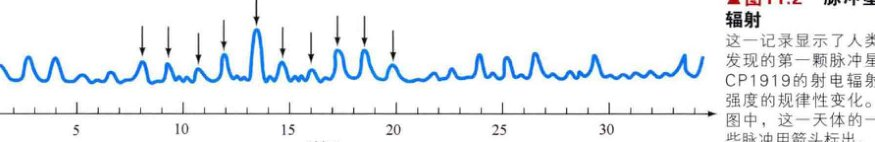这一记录显示了人类发现的第一颗脉冲星CP1919的射电辐射强度的规律性变化。图中，这一天体的一些脉冲用箭头标出。
在银河系内已经发现了超过1500颗这样的脉冲天体，它们被称为脉冲星。每颗脉冲星都有自身独特的脉冲周期和持续时间。在有些情况下，它们的脉冲周期非常稳定，使它们成为目前宇宙中已知的最精确的天然时钟，精确度甚至超过地球上的原子钟。在另一些情况下，预计它们的脉冲周期每100万年会有几秒钟的出入。当前描述脉冲星的最好的模型是一颗致密的自转中子星周期性地向地球发出的辐射。
灯塔模型
贝尔在1967年发现脉冲星时，她并不知道眼前的是什么。实际上，当时没人知道什么是脉冲星。脉冲星是自转中子星的解释为贝尔的论文指导老师安东尼·休伊什获得了1974年的诺贝尔物理学奖。休伊什推断，只有小型的自转辐射源才符合这种精确周期性脉冲的物理机制；只有自转会导致观测到的脉冲具有高度的规律性；只有一个小天体能解释为什么每个脉冲都很清晰，如果天体的直径大于几十千米，那么从不同区域发出的辐射到达地球的时间会略有不同，从而使脉冲的形状变得模糊。

关于中子星发射的“灯塔模型”解释了脉冲星的许多观测特征。带电粒子被中子星的磁场加速，沿着磁场线向外倾泻，产生向外的辐射束。在距离恒星更远的地方，磁场线引导这些粒子在恒星的赤道平面上快速地向外运动，形成脉冲星风。随着中子星的自转，辐射束扫过天空。如果它恰好与地球相交，我们就能看到一颗脉冲星——看起来非常像灯塔发出的一束光束。
图22.3列出了这一脉冲星模型的重要特征。中子星表面上的两个“热点”或者说表面上的磁层像一个狭窄的“探照灯”，不断地发出辐射。这些热点很有可能位于中子星磁极附近的局部区域，带电粒子在这里被恒星的旋转磁场加速至具有极高的能量，然后沿着恒星的磁轴发出辐射。热点产生的辐射几乎是稳定的，随着中子星的自转，由此产生的辐射束如同一个旋转的灯塔扫射太空。事实上，这一脉冲星模型通常被称为灯塔模型。如果中子星的朝向恰好使辐射束能扫过地球，那么我们就能看见这颗恒星是脉冲星。在观测上，这些辐射束表现为一系列快速的脉冲。每次辐射束扫过地球，就能观测到一个脉冲。脉冲的周期就是恒星的自转周期。
虽然不是所有超新星遗迹内都有可探测的脉冲星，但一些脉冲星确实与超新星遗迹有关。图22.4(c)显示了蟹状星云脉冲星两张光学波段的照片。这颗脉冲星位于蟹状超新星遗迹的中心 [见图22.4(a)和图22.4(b)]。(10.3节) 在图22.4(c)的左侧框图中，脉冲星是熄灭的；在图22.4(c)的右侧框图中，脉冲星正闪亮。图22.4(d)展示了脉冲星快速变化的光辐射，其脉冲周期约为33ms。蟹状遗迹在光谱的射电和X射线波段也发出脉冲。通过观察蟹状遗迹抛射物质的速度和方向，天文学家追溯了爆发应当发生在什么位置，以及超新星的中心遗迹应该在什么地方。(10.3节) 遗迹的中心对应于脉冲星的位置。那颗曾经存在的大质量恒星在1054年以超新星爆发被观测到，而这是它在爆发后留下的所有物质。
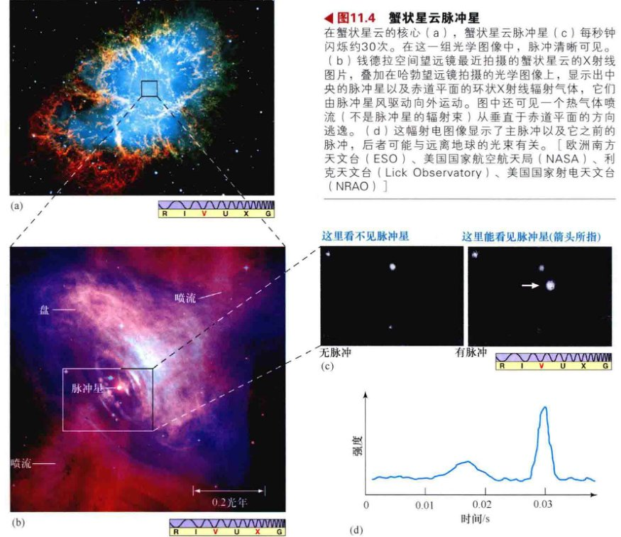在蟹状星云的核心(a)，蟹状星云脉冲星(c)每秒钟闪烁约30次。在这一组光学图像中，脉冲清晰可见。(b) 钱德拉空间望远镜最近拍摄的蟹状星云的X射线图片，叠加在哈勃望远镜拍摄的光学图像上，显示出中央的脉冲星以及赤道平面的环状X射线辐射气体，它们由脉冲星风驱动向外运动。图中还可见一个热气体喷流（不是脉冲星的辐射束）从垂直于赤道平面的方向逃逸。(d) 这幅射电图像显示了主脉冲以及它之前的脉冲，后者可能与远离地球的光束有关。
如图22.3所示，中子星的强磁场和快速自转引导恒星表面附近的高能粒子进入周围的星云中 [对比图22.4(a)中1054年超新星的膨胀包层]。这样的结果是，高能的脉冲星风几乎以光速向外流动，并且主要位于恒星的赤道平面。由于星风猛烈地撞向星云，所以星云中的气体会被它加热到非常高的温度。图22.4(b)动态地展示了蟹状星云中的这一过程——将哈勃望远镜和钱德拉望远镜拍摄的图像叠加，可以看出辐射出X射线的热气体环正在快速地离开脉冲星。图中还能看到一股热气体喷流（不是脉冲星的辐射束）正沿着垂直于赤道平面的方向逃逸。最终，脉冲星风中的能量将储存在蟹状星云中，并通过星云气体的辐射进入太空，为我们从地球上看到的壮观景象提供能量。（图10.10）
大部分脉冲星以射电辐射的形式发射脉冲，但有一些脉冲星（如蟹状星云中的脉冲星）也被观测到在可见光、X射线以及伽马射线等光谱范围内也发射脉冲。图22.5显示了蟹状星云脉冲星及其附近的杰敏卡脉冲星在伽马射线波段的辐射。杰敏卡之所以与众不同，是因为虽然它在伽马射线波段发出强烈的脉冲信号，但天文学家几乎无法在可见光波段观测到它的脉冲，在射电波段则完全无法观测到其脉冲。正如我们所预期的，无论产生哪类辐射，这些电磁闪耀在不同的频率都以规律的、重复的周期发生，因为它们都源自于同一天体。然而，不同波段的脉冲不一定发生在脉冲周期内的同一时刻。
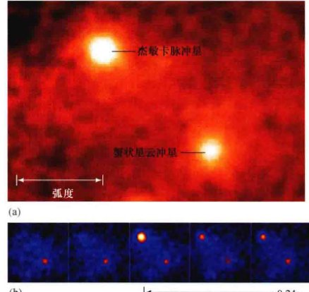(a) 在天空中，蟹状星云和杰敏卡脉冲星彼此毗邻。与蟹状星云脉冲星不同，杰敏卡脉冲星在可见光波段几乎看不见，在射电波段则完全无法探测到。(b) 康普顿伽马射线望远镜的图像显示，杰敏卡脉冲星的脉冲周期为0.24s。
大部分脉冲星的周期都很短，从0.03~0.3s（即每秒闪烁3~30次）不等。人眼对这类快速闪烁不敏感，因而即使是利用大型望远镜，也无法用肉眼观测到一颗脉冲星的闪烁。幸运的是，有仪器可以记录下人眼无法感知的这些光脉冲。
观测认为，大多数已知的脉冲星具有较高的速度（通常是通过多普勒效应测量得到的），比银河系中恒星的典型速度要快得多。对这些异常高的速度的最可能的解释，是形成它们的超新星的不对称性使它们获得了能量可观的“冲击”。理论预测，这种不对称性一般不是很明显，但如果超新星的巨大能量引导它们略微偏向一个方向，新产生的中子星便能以每秒几十甚至几百千米的速度在相反方向上产生反作用力。因此，脉冲星的观测速度赋予理论家观测超新星详细物理特征的额外视角。
中子星与脉冲星
所有脉冲星都是中子星，但并不是所有的中子星都被观测为脉冲星。原因有两点：首先，使中子星发出脉冲信号的两点要素——快速自转和强磁场，都是随时间减弱的，因此脉冲会逐渐减弱，频率也会减小。理论预测在几亿年之内，脉冲光束就会逐渐减弱，最后脉冲会完全停止。第二，从地球上的有利地点观察，即使是明亮、年轻的中子星也不一定会作为脉冲星被观测到。图22.3所描述的脉冲光束相对较窄，在某些情况下或许只有几度宽。只有中子星恰好以正确的角度朝向我们时，我们才能实际看到脉冲。当我们从地球观测到这些脉冲时，我们才将这一天体称为脉冲星。请注意，这里我们使用术语“脉冲星”来表示我们观测到的光束穿过地球的脉冲天体，然而，许多天文学家会更一般性地使用这个术语来表示任何产生如图22.3所示的辐射光束的年轻中子星。这样一个天体从某个方向看起来会是一颗脉冲星，但不一定是从我们的方向来看！
鉴于我们目前已了解的关于恒星形成、恒星演化以及中子星的知识，我们对脉冲星的观测与以下的观点一致：①每个大质量恒星都在超新星爆发中结束生命；②大多数超新星会留下一颗中子星（一些会形成黑洞，稍后将讨论）；③所有年轻的中子星都发出辐射光束，就像我们实际探测到的脉冲星。一些脉冲星确实与超新星遗迹有关，这显然证明了这些脉冲星的爆发起源。根据银河系一生中形成大质量恒星的速率估计，天文学家推测，对应于我们已知的每颗脉冲星，必然会有几十万颗中子星正在银河系的某处默默运行。它们中的一些年龄相对较小，不到几百万年，它们的能量光束恰好偏离了地球的方向。然而，它们中的大部分十分古老，自身年轻的脉冲星阶段早已逝去。
在被实际观测到之前很久，理论便预测了中子星（和黑洞），尽管它们的极端性质让许多科学家怀疑是否能发现它们。目前，我们不仅强有力地证明了它们的存在，还证明了它们在高能天体物理领域所扮演的重要角色。这一事实再次证明了恒星演化理论的基本可靠性。
概念理解检查
❓ 为什么我们不能在所有超新星遗迹的中心看到脉冲星？
22.3 中子双星
在第6章中我们指出，大多数恒星都不是孤立的，而是双星系统的成员。(6.7节) 尽管许多脉冲星已知是孤立的（即不属于任何双星系统），但至少它们中的一些有双星伴星。中子星的情况整体上也是如此（包括那些未被观测为脉冲星的中子星）。这一成对现象产生了一个重要的结果，一些中子星的质量能被精确地测定。虽然报道称最近发现了一颗质量为两倍太阳质量的中子星，但所有已被测定的质量都在1.4倍太阳质量上下，即恒星核心坍缩形成中子星遗迹的钱德拉塞卡质量极限。
X射线源
20世纪70年代末出现了双星系统内中子星的几个重要发现。大量的X射线源被发现位于银河系的中心区域，以及一些恒星众多的星团的中心附近。这些X射线源中的一些被称为X射线暴源。它们剧烈爆发并释放出大量能量，每次爆发都比太阳的光度强数千倍，但仅持续几秒钟。图22.6显示了一次典型的爆发。
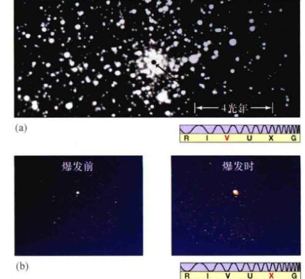X射线爆发源会产生快速且强烈的X射线闪耀，而后是持续长达数小时的相对不活跃期。之后会发生另一次的爆发。(a) 是球状星团Terzan 2的光学照片，图中2"大小的小点（箭头所指）是X射线爆发生的地方。(b) 在X射线爆发之前和爆发期间拍摄的图像。其中最强烈的X射线对应(a)图中黑点的位置。
在双星系统中子星的表面或附近，这种X射线辐射会上升。中子星的巨大引力会从伴星（主序星或巨星）表面拉扯和吸引物质，并聚集在中子星的表面。与白矮星吸积的情况一样（见第10章），物质不会直接落到表面上，而是会如图22.7(a)所示，形成一个吸积盘（与描述白矮星吸积盘的图10.2对比）。(10.1节) 气体会进入一条紧密围绕中子星的轨道，然后慢慢地、呈螺旋状地向内移动。吸积盘的内部会变得非常热，并释放出稳定的X射线流。

(a) 物质从一颗正常的恒星沿吸积盘流向致密的中子星伴星表面。在中子星的巨大引力作用下，气体沿螺旋轨道向内移动并随之升温。温度足够高时，它会发出X射线。(b) 对特殊天体SS 433的射电辐射拍摄的伪彩色图片，每张图片间隔一个月（从左到右），图片显示其喷流向外移动，其中心的源在伴星的引力作用下旋转。
随着气体在中子星表面聚集，它的温度也会随着表层物质的压力而上升。很快，温度逐渐高到可以进行氢聚变，其结果是突然发生一段快速的核燃烧，释放出巨大的能量，产生一个短暂但强烈的X射线闪耀——X射线暴。在几个小时的物质持续积累后，新累积的物质层会发生下一次爆发。因此，X射线暴非常类似于白矮星的新星爆发，但因为中子星的引力更强，所以其爆发的规模更加猛烈。(10.1节)
然而，并不是所有向内流动的气体都会落到中子星表面，至少在被称作SS 433的天体中是如此。它距离地球约5000pc。对它的直接观测证据表明，一些物质以非常高的速度飞向双星系统之外。在与SS 433的吸积盘几乎垂直的方向上，有两个方向相反的窄喷流，SS 433通过这种方式每年向外喷出的物质质量比我们地球的质量还要大。对喷流产生的光学发射线进行的多普勒分析表明，其速度接近80,000 km/s，即超过光速25%！由于喷流与星际介质的相互作用，它们会发出如图22.7(b)所示的射电辐射。
在吸积盘围绕一个致密天体（如中子星或黑洞）的天文系统中，这类喷流显然是很常见的。虽然它们形成的细节仍不确定，但它们被认为是由吸积盘内侧边缘附近的强烈辐射和磁场所产生的。请再一次注意，这些喷流并不是如图22.3中所示的可以产生脉冲的中子星的“灯塔”辐射束，它们与图22.4(b)中的脉冲星风也无关。
从发现SS 433以来，银河系中又发现了十多个性质类似的具有恒星质量大小的天体，在后面的章节中，我们将在更大尺度上看到类似的现象。事实上，目前称呼类似于SS 433“恒星尺度”天体的术语——微类星体——源自于能量更加巨大的星系类对应体（被称为类星体）。在微类星体的研究中，SS 433尤其重要，因为我们可以实际观测到它的吸积盘和喷流，而不是像研究遥远的宇宙天体那样简单地假设它们的存在。
毫秒脉冲星
20世纪80年代中期，脉冲星的一个重要新类别被发现：一种被称作毫秒脉冲星的快速自转天体。目前，银河系内已知约有250个此类天体。这些天体每秒自旋数百次（即它们的脉冲周期是几毫秒）。这是一颗没有伴星的典型白矮星的最快自转速度。在某些情况下，恒星赤道的运动速度超过光速的20%。这一速度意味着近乎不可思议的现象：一个尺度为若干千米的宇宙天体，质量比太阳还要大，以几乎能使自身解体的速度自转，而且每秒自转近千次！然而，对它们的观测和解释却几乎毫无疑点。
这些引人注目的天体的故事其实更为复杂，因为它们中的三分之二都被发现位于球状星团内。这非常奇怪，因为球状星团是非常古老的，年龄至少有十亿年。(9.5节) 然而，与II型超新星（形成中子星的那类超新星）有关的大质量恒星会在形成数千万年后爆炸；而自从球状星团形成后，其中没有形成任何新的恒星。因此，在很长的一段时间内，球状星团中并没有形成新的中子星。但超新星产生的脉冲星的自转速度预计在几百万年后会慢下来，100亿年后应该会完全停止自转。因此，在球状星团内发现的快速自转脉冲星不可能是在它形成时留下的遗迹。相反，这些天体近期一定通过某种机制进行了“自转加速”，即提高了自身的自转速度。
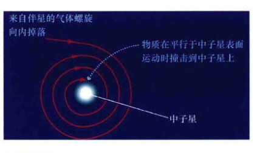由于向内落下的物质会撞向中子星，它们的运动轨迹几乎平行于中子星表面，因此会让中子星自转得更快。最终，这一过程可能会形成毫秒脉冲星——一颗以每秒几百次这一难以置信的速度自转着的中子星。
对这些脉冲星高速自转的最可能的解释是，中子星通过从伴星吸积物质使自旋加快。随着物质在吸积盘中螺旋下降到恒星表面，这一过程提供的“推力”使中子星加快了自转的速度，如图22.8所示。理论计算表明，这一过程可使恒星自转速度加快，在大约一亿年内保持几乎能被瓦解的速度。支持这一普遍观点的发现是，在球状星团中发现的约150个毫秒脉冲星中，已知大约有一半是双星系统的成员。剩下的独立毫秒脉冲星可能是在与其他恒星的偶遇中从双星系统中被驱逐出来的，或是脉冲星的强大辐射摧毁了它的伴星。
因此，尽管类似于蟹状星云脉冲星的脉冲星是超新星的直接产物，但毫秒脉冲星是由两个过程形成的。首先，在数十亿年前，中子星在一颗古老的超新星中形成。然后，在相对较近的时期，通过与双星伴星的相互作用，中子星获得了我们今天观测到的自转速度。我们再次看到了双星系统的成员与单一恒星演化方式的区别。请注意，从双星伴星吸积物质到中子星的场景，与我们刚才用来解释X射线暴源存在的图景是相同的。事实上，这两种现象有着紧密的联系。许多X射线暴源可能正在形成毫秒脉冲星，而许多毫秒脉冲星也是X射线源，其能量来自于由双星系统落向它们表面的物质细流。

古老的杜鹃座球状星团47的致密核心栖息着100多个独立的X射线源（如右下角钱德拉空间望远镜拍摄的图像所示）。其中超过一半被认为是毫秒脉冲星双星。早期，它们通过伴星的质量转移使自转加速至每秒数百次，之后它们仍从伴星吸积少量的气体。
图22.9显示了杜鹃座球状星团47以及由钱德拉空间望远镜拍摄的核心区，后者显示星团中有不少于108个X射线源，这一数量比钱德拉空间望远镜发射之前已知的X射线源数量大了10倍。这些源中约一半是毫秒脉冲星，星团中还含有两三个“传统的”中子星双星。余下的大部分X射线源是白矮星双星，与第10章中讨论的类似。(10.1节)
中子星是如何成为双星系统成员的这一问题是一个活跃的研究课题，因为超新星爆发的巨大力量在很多情况下会瓦解双星系统。只有超新星的前身星在爆发前丢失很多质量，双星系统才有可能幸存。此外，通过与现有双星系统的相互作用并替代其中的一颗伴星，中子星也可能在双星系统形成后成为其中的一员，如图22.10所示。天文学家们正急切地在天空中寻找更多的毫秒脉冲星来验证自己的想法。

中子星会遇到由两颗低质量恒星组成的双星系统，从中逐出一个并替代它的位置。这种机制提供了一种形成含有一颗中子星（之后可能演变成一颗毫秒脉冲星）的双星系统的方式，而无须解释中子星双星是如何从超新星爆发中幸存的。
脉冲行星
利用脉冲星信号重复的精确度，射电天文学家可以非常精确地测量脉冲星的运动。1992年1月，阿雷西博天文台的射电天文学家发现，最近发现的一颗距离地球大约500pc的毫秒脉冲星，在以一种意想不到的但很规律的方式变化其脉冲周期。对数据的仔细分析显示，它的脉冲周期在两个完全不同的时间尺度内波动——一个是67天，另一个是98天。脉冲周期的变化很小，不到 1/107，但重复的观测证实了它们的真实性。
这些波动是由脉冲星在太空中来回摇摆运动引起的多普勒效应产生的。(2.5节) 但是什么引起了这种摆动？阿雷西博的研究组认为，这是两颗行星而不是一颗行星的引力组合产生的结果，这两颗行星的质量都约为地球质量的3倍！其中一颗行星在距离脉冲星0.4天文单位的轨道上绕转，另一颗则距离脉冲星0.5天文单位。它们的轨道周期分别是67天和98天，与脉冲周期的波动相匹配。1994年4月，该研究组宣布，进一步的观测不仅证实了他们的早期发现，还显示了存在第三个天体，其质量与地球的卫星月亮相似，轨道距离脉冲星仅0.2天文单位。
这些非凡的结果构成了太阳系外存在行星大小天体的第一个明确的证据。之后，其他几颗毫秒脉冲星被发现也具有类似的行为。然而，这些行星中任何一颗的形成方式都不太可能与我们的行星一样。任何环绕脉冲星前身星的行星系统几乎肯定都在形成脉冲星的超新星爆发中被摧毁了。其结果是，科学家仍不确定这些行星是如何形成的。一种可能的解释与双星系统的伴星有关，它提供了必要的物质，使脉冲星的自转速度加速至每秒数百次。有可能脉冲星的强辐射和强大的引力摧毁了伴星，然后将其物质散布到吸积盘（有点像太阳星云）上，在吸积盘低温的外部区域可能凝聚成行星。
概念理解检查
❓ X射线源和毫秒脉冲星之间的联系是什么？
22.4 伽马射线暴
伽马射线暴在20世纪60年代末由寻找《禁止核试验条约》违规情况的军事卫星偶然发现，并于20世纪70年代首次公开。伽马射线暴是明亮且不规则的，通常只持续几秒钟的伽马射线闪耀（如图22.11a）。直到20世纪90年代，人们仍认为伽马射线爆发基本上是X射线暴源的“升级”版本，其核燃烧更猛烈，能释放能量更高的伽马射线。然而，事实并非如此。
距离和亮度
图22.11(b)显示了全天2704个伽马射线暴的位置，它们由康普顿伽马射线天文台 (CGRO) 在其九年的操作寿命内所探测。(4.7节) CGRO发现伽马射线爆发的平均速度是一天一个。注意，爆发均匀地分布在整个天球（也就是说它们的分布是各向同性的），而不是局限在银河系这样相对较窄的条带上（与图4.37进行比较）。爆发似乎永远不会在同一位置重复，也没有显示出明显的聚集，而且无论它们距离远近，都无法与任何已知的大尺度结构相匹配。虽然CGRO无法测量任何观测到的爆发的距离，但数据的各向同性使大多数天文学家相信这种爆发产生于我们银河系之外很远的距离处——即所谓的宇宙学距离，堪比宇宙本身的尺度。

(a) 三次伽马暴爆发的强度与时间（以s为单位）图，注意它们之间的实质性差异。有些爆发是不规则的、尖锐的，而另一些的变化则较为平滑。(b) 康普顿天文台在近9年的操作寿命内，在全天探测到的伽马暴。这些爆发似乎均匀地分布在整个天球中，银道面水平位于图片的中心。
事实上，测量伽马射线爆发的距离并非易事。对伽马射线的观测不能提供足够的信息来告诉我们爆发发生时的距离，所以天文学家必须将爆发与天空中的其他天体相关联。这些天体被称作爆发对应体，它们的距离可以通过其他方式测量得到。研究对应体的技术通常涉及光学或对X射线波段电磁波谱的观测。但问题是，伽马射线望远镜的分辨率很差，所以爆发的位置可能非常不确定，必须在相对较大的一片天区内搜寻对应体。(4.7节) 此外，X射线爆发的“余晖”在X射线和光学波段迅速衰减，严重限制了完成搜寻的时间。
结合伽马射线探测器和（或）光学望远镜的卫星，天文学家对爆发对应体展开了最成功的搜索。宇航局的雨燕计划 (Swift) 于2004年发射，目前仍在运行中。它结合了一个广角伽马射线探测器（以监控尽可能大面积的天区）和两个望远镜：一个X射线望远镜和一个光学（紫外）望远镜。伽马射线探测系统以大约4'的精度确定爆发的位置，星载计算机会在几秒钟内自动调整卫星，将X射线和光学望远镜指向该方向。同时，卫星将爆发的位置传递给空间和地面上的其他设备。雨燕号以大约每周一个的速度探测爆发对应体，为推进我们理解这些剧烈的爆发有着关键的作用。
图22.12(a)和(b)显示了雨燕号对伽马暴GRB 080319B拍摄的X射线和光学图像，这是迄今为止最明亮的一次伽马射线爆发。在雨燕号检测到爆发后几秒内，自动观测在多波段展开，使这次爆发成为有史以来研究最深入的一次。

长时伽马射线暴GRB 080319B是迄今观测到的最明亮的一次爆发。它在2008年3月19日到达地球的光，是在75亿年之前发出的。如果任何人瞄准天空中正确的位置，用肉眼就可见几秒钟的闪耀！在爆发发生片刻之后，它分别在X射线(a)和可见光(b)波段被观测到。
1997年，天文学家成功地获得了一次极其剧烈的爆发的可见光余晖光谱，第一次对伽马射线暴的距离进行了直接测量。天文学家获得的光谱含有铁和镁吸收线，但是它们的波长红移了近两倍。红移是宇宙膨胀的结果，它明确证实了这一特殊的伽马暴确实发生在宇宙尺度上，其他所有的伽马暴大概也是如此。（这次伽马暴距离地球超过20亿秒差距。）迄今为止，通过测量余晖，数以百计的伽马射线暴的距离已被确定。所有这些距离都非常遥远，意味着爆发的能量必然非常巨大，否则我们的设备便无法检测到它们。
如果我们假设向各个方向发出的伽马射线是相同的，利用平方反比定律就可以很容易地计算出爆发的总能量。(6.2节) 通过这种方式，我们会发现，每次爆发产生的能量显然比典型的超新星爆发产生的能量更多，在某些情况下，其能量甚至比典型超新星爆发的数百倍，而且这些能量都在几秒钟内被释放出来！这样巨大的能量不符合理论解释。理论家们很幸运，因为上面简单的估计极大地高估了实际产生的能量。辐射很有可能是从一个非常窄的流束中被释放出来的，所以我们看到的能量可能只来自天空的一小部分。
作为类比，请考虑一个在演讲和讲座中常用的手持激光指示器。它的辐射输出只有几毫瓦，远不到一个家用灯泡的功率，但如果你恰巧直视光束，那它看起来会极其明亮。（顺便提一下，请不要这样做！）像激光束一样，伽马射线暴之所以看起来如此明亮，是因为几乎它所有的能量都集中在一个方向，而不是沿各个方向辐射到太空中。考虑到这一点，伽马射线暴的能量总辐射降低到了可以更好地被理解的程度，但仍然与超新星爆发的能量规模相当。
什么引发了爆发？
伽马射线暴源不仅能量巨大，而且体积也非常小。爆发中的毫秒闪烁脉冲意味着无论起源如何，它们所有的能量都必须来自于一个直径不超过几百千米的天体。推理如下：如果假设能量辐射区域的直径是300,000km，即1光秒，那么即使是辐射源辐射强度的瞬时变化，从地球上看起来也是将在1s的时间间隔内被模糊掉，因为从天体远端发出的光比近端发出的光要多花费1s才能到达地球。由于伽马射线的变化没有被光的传播时间所模糊，所以暴源的直径不能超过1光毫秒，或仅300km。
伽马射线爆的理论模型将爆发描述为一个相对论火球——一团膨胀的超高温气体团，很有可能是一束超高温气体，在伽马射线波段发出强烈的辐射。（“相对论”一词在这里意味着粒子以接近光速运动，需要用爱因斯坦的相对论来描述它们——见22.6节）。随着火球的膨胀、冷却，以及与周围环境的相互作用，产生了复杂的爆发结构和余晖。
如图22.13所描绘的，关于能量来源出现了两个主要的模型。第一个模型 [见图22.13(a)] 是双星系统的“真正”终点——两个伴星互相并合。假设双星系统的两个成员都演化为中子星。随着系统的继续演化，会释放出引力辐射（见探索11-2），两个致密星会螺旋地接近对方。一旦它们的距离在几千米之内，并合将是不可避免的。这样的并合可能会产生一次相当猛烈的爆发，其能量与超新星爆发的能量相当，足以解释我们观测到的伽马射线闪耀。双星系统的整体旋转会引导能量进入高速、高温的喷流。

为了解释伽马射线暴，出现了两个模型。(a) 图描绘了两个中子星的并合；(b) 图显示了一颗孤立的大质量恒星的坍缩。这两个模型都预测会产生一个相对论火球，它或许如右图所描述的那样以喷流的形式释放能量。
第二个模型 [见图22.13(b)] 有时也被称为巨超新星。它是一个“失败”的超新星。但这是一次多么惊人的失败啊！在这一模型中，一个质量非常巨大的恒星的核心区按照之前的II型超新星的模式坍缩。但它不是形成中子星，而是坍缩为黑洞（见22.5节）。(10.2节) 同时，向外通过恒星的冲击波停滞。恒星内部区域开始内爆，而不是被炸成碎片，形成吸积盘环绕着黑洞并产生一个相对论的喷流。喷流向外通过恒星，与恒星核燃烧的最后阶段形成的气体壳层发生猛烈撞击，产生伽马射线暴。（探索9-2）与此同时，吸积盘的强烈辐射可能点燃已经停滞的超新星，使恒星余下的物质爆发并进入太空。
相对论火球的观点已被天体物理学分支的研究人员广泛接受。由于雨燕号和其他仪器提供的“快速反应网络”，天文学家已经详细观测了长伽马暴和短伽马暴的许多余晖。我们能辨别两个模型中的哪个描述是正确的吗？事实上，这一领域的专家会回答：答案是两者可能都正确。
中子星合并模型自然地揭示了短伽马射线暴。短伽马射线暴迅速暗淡的X射线余晖与这一模型预测的细节相符。最近的观测也表明，虽然并不常见，但一些此类爆发可能涉及理论预测的中子星与黑洞的并合。这类并合应该有它们特有的特征光谱。
巨超新星模型预测了持续时间相对较长的爆发，是对长伽马暴的主要解释。图22.14(a)和图22.14(b)中展示了智利8.2m口径的VLT所拍摄的长伽马暴GRB 030329。(4.2节) 它的光谱和光变曲线都符合天文学家对由大质量恒星（约25倍太阳质量）形成的超新星的预测。(10.3节)

在理论学家理解伽马射线暴这一剧烈现象后的物理过程时，伽马射线暴GRB 030329可能至关重要。爆发对应体拥有大质量超新星的所有特征，为巨超新星模型提供了有力的支持。(a) 爆发瞬间后不久和(b)爆发后一个月的图像。(c) 这幅简化的示意图显示了另一个相似的伽马射线暴所释放的能量。
概念理解检查
❓ 什么是伽马射线爆，为什么它们对当前的理论形成如此大的挑战？
22.5 黑洞
表22.1列出了这里讨论的一些致密的恒星遗迹的性质。褐矮星、白矮星、黑矮星是由简并电子支撑的，电子被紧密地挤压在一起以抵抗恒星的进一步收缩。(9.2节、9.3节) 正如我们刚看到的，更加致密的中子星由中子产生的类似机制所支撑。中子星的中子挤在一起，形成一个硬球，即使引力也无法将它们进一步压缩。或者它真的还能被压缩？足够多的物质是否有可能被压缩进足够小的体积，而聚合的引力最终能粉碎任何有相反作用的压力？引力可以继续将大质量恒星压缩至一颗行星大小、一个城市大小、一个针头大小——甚至更小吗？显然，答案是肯定的。
恒星演化的最终阶段
大部分研究人员一致认为，中子星的质量不能超过3倍太阳质量。因为还无法准确理解物质在非常致密状态下的行为，因此这一数字的准确值还不确定。中子星的这一质量限制相当于我们在前一章中讨论过的白矮星的钱德拉塞卡质量限制。(10.3节) 超过这个极限，无法再压得更紧密的中子星将无法承受星体引力的吸引。事实上，一旦超过中子简并压后，没有任何已知的力量可以抵抗引力。如果超新星中心核的质量超过3倍太阳质量的极限，并留下足够多的物质，引力就将在同压力的竞争中彻底获胜，恒星的中心核将一直坍缩下去。恒星演化理论表明，这是质量超过太阳质量25倍的主序星的命运。
3倍太阳质量的限制是不确定的，部分原因是它忽略了磁场和自转的影响，而这两个因素无疑都会出现在演化后期的恒星的核心中。因为这些影响可以与引力相匹敌，它们会影响恒星的演化。(8.1节) 此外，我们无法确切地知道，对于快速自转和被强磁化的非常致密的物质，基本的物理定律会发生什么变化。一般来说，理论学家认为在考虑磁场和自转的情况下，中子星的极限质量会有所增加，因为需要更多的质量，引力才能将恒星的中心核压缩成中子星或黑洞，但增加多少目前还不清楚。
| 残留物 | 典型质量 / 太阳质量 | 典型半径 / km | 典型密度 / (kg/m3) | 支撑力 | 形成缘由（章节） |
|---|---|---|---|---|---|
| 褐矮星 | 不到0.08 | 70,000 | 105 | 电子简并 | 永远不能开始H聚变 (8.3节) |
| 白矮星 | 不到1.4 | 10,000 | 109 | 电子简并 | 恒星内核在形成C/O后停止核聚变 (9.3节) |
| 黑矮星 | 不到1.4 | 10,000 | 109 | 电子简并 | “冷却的”白矮星 (9.3节) |
| 中子星 | 1.4~3 (近似) | 10 | 1018 | 中子简并 | 核坍缩超新星的残留物 (22.1节) |
| 黑洞 | 超过3倍 | 中心无限大 | 中心无限大 | 没有 | 大质量前身星的核坍缩超新星的残留物 (22.5节) |
随着恒星核的收缩，它周围的引力最终变得巨大无比，甚至连光都无法逃逸出去。最终形成的天体不发光，没有辐射，也没有任何信息。天文学家将这一奇异的恒星演化终点称为黑洞。在这种情况下，大质量的内核遗迹将向内坍缩，并永远消失。
逃逸速度
至今，牛顿力学仍是我们理解宇宙可靠的、不可或缺的工具，但它并不能完备地描述黑洞中或黑洞附近的情况。要理解这些坍缩的天体，我们必须转向现代的引力理论——下文即将讨论的爱因斯坦广义相对论。不过，我们仍可以用牛顿力学或多或少地讨论这些奇异天体的某些方面。让我们再次考虑牛顿力学中熟悉的逃逸速度这一概念，即一个物体摆脱另一个物体的引力所需要的速度；同时考虑相对论中两点重要的事实：①没有任何物体的速度能超过光速，②包括光在内的所有事物都会被引力所吸引。
一个物体的逃逸速度与物体质量除以它的半径的商的平方根成正比。地球的半径是6400km，地球表面的逃逸速度仅为11km/s。现在考虑一个假想的实验，地球被一个巨大的老虎钳从各个方向挤压。地球在压力下收缩，它的质量保持不变，但由于地球的半径减小，故其逃逸速度增加。例如，假设地球被压缩至目前大小的四分之一，则地球的逃逸速度将翻一倍。要逃离这个被压缩的地球，一个物体至少需要22km/s的速度。
想象地球被压缩得更小。更大比例地压缩地球，比如说压缩至目前大小的千分之一，使地球半径不超过1km。现在，要摆脱地球引力需要约630km/s的速度。进一步压缩地球，逃逸速度就将持续上升。如果我们假想的老虎钳能足够有力地挤压地球，使其半径达到1cm，那么逃离地球表面所需的速度将达到 300,000 km/s。但是，这不是普通的速度——这是光速——目前已知的物理规律所允许的最快速度。
因此，如果通过一些骇人的手段，就可以将整个地球压缩至不到葡萄的大小，逃逸速度就将超过光速。然而，实际上没有什么能够超过这一速度，引人注目的结论是：没有——绝对没有——任何事物能逃离被如此致密压缩的物体表面。
黑洞的性质
现在，黑洞一词的起源变得清晰起来：没有任何形式的辐射能从葡萄大小的地球的强大引力下逃脱，包括射电波、可见光、X射线以及任何波长的光子。由于没有光子能够逃离，因此我们的星球将不可见，也无法交换信息，没有任何形式的信号可以被发送到地表之外的宇宙。以所有实际经验来讲，这样超级紧密的地球可以说已经从宇宙中消失了！只有它的引力场会保留下来，泄露它现在已经缩为一点的质量的蛛丝马迹。
黑洞在能量和物质流入方面的“单向”性，意味着几乎所有关于物质掉落黑洞的信息都一去不复返——包括气体、恒星、宇宙飞船或者人，只有极少数能存留下来。事实上，我们现在知道了，无论形成黑洞的天体的组成、结构或历史如何，黑洞只有三个物理性质可以从外部测量：黑洞的质量、电荷以及角动量。其他所有信息和物质一旦进入黑洞便丢失了。因此，完整描述黑洞的外观及其与宇宙其余部分的相互作用只需要三个数字。
在这一章里，我们将集中讨论由无自转、电中性物质形成的黑洞。一旦它们的质量已知，这类天体就完全被指明了。
事件视界
在天体某一半径处，物体的逃逸速度与光速相同，在这一范围之内的物体将不可见。天文学家对这一临界半径有着特殊的名称——史瓦西半径。这一名称是为了纪念首先研究其性质的德国科学家卡尔·史瓦西。任何天体的史瓦西半径仅与其质量成正比。就地球而言，史瓦西半径是1cm；木星的质量约为地球质量的300倍，它的史瓦西半径大约是3m；太阳质量是地球质量的300,000倍，它的史瓦西半径是3km；3倍太阳质量的恒星核心残留物的史瓦西半径约9km。一个便于计算的经验法则是，任一天体的史瓦西半径都是3km乘以以太阳质量为单位的天体质量。每个天体都有一个史瓦西半径，这是它被压缩成为黑洞所需的半径。换句话说，黑洞是恰好位于自己的史瓦西半径之内的天体。
如果一个假想球体的半径等于史瓦西半径，并以一颗坍缩中的恒星为中心，那么它的表面就被称为“视界”。它定义了在什么范围内没有任何事件能被处在外面的任何人看到、听到或者知道。尽管视界与任何形式的物质都不相关，但我们仍可以把视界认作是黑洞的“表面”。
一颗3倍太阳质量的中子星的半径约为10km，其史瓦西半径为9km。如果我们持续增加中子星的质量，中子星的史瓦西半径就将增长，尽管其实际物理半径不会有变化（事实上，随着质量的增加，中子星的半径略有减小）。当中子星的质量超过3倍太阳质量时，它会完全位于自己的视界之内，并将自动开始坍缩；到达史瓦西半径后它也不会停止坍缩：视界并不是一个物理边界，而是一个信息传输的障碍。残留物将越过史瓦西半径，不断缩小直至被压成一个点。
因此，如果超新星爆炸后留下的物质质量至少为3倍太阳质量，其核心也将灾难性地坍缩，在不到1s的时间内缩小至视界之内。恒星内核只是简单地“瞬间熄灭”，消失并成为一块小小的黑暗区域，没有任何事物可以从这里逃离——形成太空中确确实实的黑洞。理论表明，这可能是质量超过20~25倍太阳质量的恒星的命运。
22.6 爱因斯坦的相对论
我们在本章以及之前几章研究的天体远远超出了牛顿力学和万有引力的应用范围。现在，面对极端的物质状态、与光速相当的速度、即使光线也无法逃脱的强烈引力场，这些“主力”理论必须让位于更精致的工具。这些工具便是狭义相对论和广义相对论。
狭义相对论
19世纪后期，物理学家也意识到了光速 c 的特殊地位。他们知道这是所有电磁波的传播速度。按照他们最好的理解，光速 c 代表了所有已知粒子的速度上限。但科学家一直没有成功构建一个以 c 为自然速度极限的力学和辐射理论。
1887年，美国物理学家A.A.迈克尔逊和E.W.莫雷共同完成了一项基本试验，展示了光的另一个重要而独特的性质，使理论学家面临的问题更复杂。实验显示，对一束光测量得到的速度与观察者或光源的速度无关（见探索11-1）。无论我们相对辐射源的速度如何，我们总会精确地得到相同的光速 299,792.458 km/s。
片刻思索就能告诉我们，这是一个明显与直觉相违背的论断。例如，如果我们在行驶速度为100km/h的汽车里打出一颗子弹，子弹相对于汽车以1000km/h的速度向前运动，那么路边的观察者将看到子弹以 100 + 1000 = 1100km/h 的速度运动，如图22.15(a)所示。然而，迈克尔逊-莫雷实验告诉我们，如果我们乘坐速度为十分之一光速的火箭飞船旅行，并点亮我们前面的一束探照灯的话 [见图22.15(b)]，与子弹的例子不同，外面的观察者测量得到的光束速度不是 1.1c，而是 c。以光速或接近光速运动的粒子的规律，不同于适用于我们日常生活的规律。
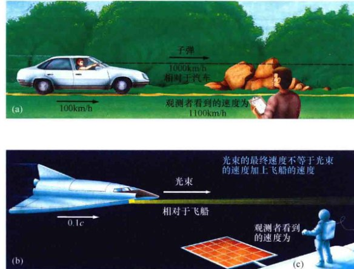(a) 外部观测者测量从飞驰的汽车中射出的一颗子弹的速度，它等于汽车和子弹的速度之和。(b) 从高速运行的宇宙飞船向外发出一束光。无论宇宙飞船的速度是多少，观测者测量得到的这束光的速度仍然是c。光速是独立于光源或观测者的速度。
爱因斯坦在1905年提出了相对论的狭义理论（或就叫作狭义相对论），以解决光速的重要地位。这一理论提供的数学框架允许我们将熟悉的物理定律的适用范围，从低速（即速度远低于c，通常被称为非相对论的速度）提升至与c相当的极高速（或相对论速度）。这一理论的基本特征如下：
- 光速 c 是宇宙中最大的可能速度，并且无论观测者如何运动，他们测量得到的光速值都是相同的。爱因斯坦将这一论述上升为相对性原则：对于所有没有加速度的观测者来说，基本物理原理是相同的。
- 宇宙中没有绝对的参考系，也就是说，相对于其他所有可以被测量的速度，没有“首选”的观测者。换句话说，没有办法区分谁在运动、谁没有在运动；相反，只有观测者与物质之间的相对速度（因此得到术语“相对论”）。
3) 空间和时间都不能被认为是彼此独立的。相反，它们是一个整体——时空——的不同组成部分。没有绝对、统一的时间，观测者的时钟以不同的速率发出嘀嗒声，它取决于观测者之间的相对运动。
狭义相对论对应于描述速度比光速慢得多的物体的牛顿力学，但它们在预测以相对论速度运动的物体方面有很大的差别。（见探索11-1）尽管狭义相对论经常有违直观，但该理论的所有预测都能被高度准确地反复验证。今天，狭义相对论是现代科学的核心，没有科学家会怀疑它的正确性。
探索 11-1 狭义相对论
1887年，迈克尔逊-莫雷实验试图确定地球相对于“绝对”空间的运动，而光则被认为是在“绝对”空间中运动。如第一张图所示，迈克尔逊和莫雷认为，由于他们的仪器随着地球自转并绕太阳公转运动，所以他们测量得到的光速也会变化——当光束运动方向与地球运动方向相反时，光速更快；当地球运动方向与光束运动方向相同时，光速变慢。事实上，无论设备的方向如何，他们测量得到的光速都完全相同。这意味着，要么是地球没有在太空中运动，这与我们看到的恒星视差不符；要么当涉及光时，牛顿的考量和人类的直觉出了错。迈克尔逊-莫雷实验并没有测量得到绝对空间的属性，而是最终摧毁了整个概念。
爱因斯坦用狭义相对论解释了迈克尔逊-莫雷实验，并将光速上升为自然界的常数。他重写了力学定律以反映新的事实。在这一过程中，不得不放弃许多常识性的观点，取而代之的是一些明显不直观的概念。
想象你是一名观测者，看见火箭飞船以相对速度v飞过。如果v远低于光速c，你将不会发现什么反常现象。然而，随着飞船的速度增加，你开始注意到它似乎是在飞行的方向上发生收缩。在起飞时，飞船上的米尺与实验室中的米尺完全相同，但现在却比实验室的米尺要短，这被称为洛伦兹收缩。图中显示了测量移动飞船上的米尺得到的长度：速度较低时，米尺是1m长，但在高速时米尺缩短了很多。以90%的光速移动时，米尺会缩小至接近0.5m。
同时，飞船上的时钟在起飞时与你自己的时钟同步，但现在它更慢。这种现象被称为时间膨胀，已在实验室的实验中被多次观察到：快速移动的放射性粒子的衰变速度比它们相对于实验室静止时要慢得多。它们内部的时钟，即它们的半衰期，被快速的运动所减缓。尽管没有物质粒子可以达到光速，但爱因斯坦的理论表明，当接近光速c时，测得的米尺长度将降至几乎为零，时钟也将减缓至近乎停止。
当然，从飞船上的宇航员看来，是你在迅速移动。从飞船上看起来，似乎是你在运动方向上被压缩，而你的时钟变得缓慢。这怎么可能呢？答案是，在相对论中，我们熟悉的同时性概念——即两个事件“同时”发生的观点——不再有明确的意义，它取决于观测者。
进一步的实验表明，随着飞船加速，火箭飞船的质量也会上升。当飞船速度接近光速时，飞船的质量接近无限大。最后，火箭飞船的能量和质量互成比例，由著名的质能方程 E=mc2 联系在一起。这也许是狭义相对论最著名的预言。
广义相对论
爱因斯坦的狭义相对论根据的是相互之间以恒定速度运动的参考系（“观测者”）。爱因斯坦构建了自己的理论，重写了两个多世纪以前牛顿描述物体运动的定律。但牛顿的另一伟大遗产——万有引力理论——与以恒定相对速度移动的观测者无关。相反，引力会导致观测者相对于另一个观测者加速，产生更为复杂的数学问题。将引力纳入狭义相对论，又花费了爱因斯坦十年时间。其结果再次推翻了科学家对宇宙的理解。
1915年，爱因斯坦通过著名的“思想实验”，揭示了狭义相对论和万有引力之间的联系。想象你身处一个没有窗户的封闭电梯中，无法直接观察到外面的世界，而电梯是漂浮在太空中。你处于失重状态。现在假设你开始感到地板在挤压你的脚，重力显然已经回来了。如图22.16所示，对此有两种可能的解释：有可能大质量物体在附近出现，你感觉它对你的向下的引力；或者电梯已开始加速上升，你感受到的作用力源自于电梯在以同样的加速度使你加速。爱因斯坦的关键论点是：在电梯内（不能往外看）进行的实验，不能让你分辨以上两种可能性。
因此，爱因斯坦推断，没有办法区分引力场和加速的参考系（例如“思想实验”中上升的电梯）。这一论断更正式地被称为等效原理。利用它，爱因斯坦着手将万有引力纳入狭义相对论并作为所有粒子共有的加速度。然而，他发现需要对狭义相对论进行另一项重要修正。正如我们刚刚看到的，相对论的核心理念是空间和时间在概念上并不是互相独立的，而必须被视为一个整体——时空。要包含万有引力的影响，数学计算不可避免地迫使爱因斯坦得到一个结论：时空必须是弯曲的。将万有引力包含进狭义相对论框架而产生的理论，被称为广义相对论。
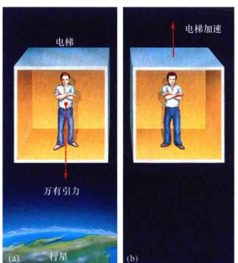爱因斯坦认为，完全在电梯内进行的实验无法告诉乘客，他们感受到的作用力是由(a)附近的一个巨大物体的引力还是由(b)电梯本身的加速度所引起的。
广义相对论的核心概念是：所有物质都会“扭曲”或“弯曲”附近的空间。诸如行星和恒星等天体通过改变它们的轨迹来对“扭曲”做出反应。按照牛顿对引力的观点，粒子沿着弯曲的轨道运动，是因为它们受到引力的作用。爱因斯坦的相对论认为，这些粒子沿着弯曲的轨道运动，是因为它们在被附近一些大质量物体弯曲的空间中自由下落。这些天体的质量越大，空间越扭曲。因此，在广义相对论中，没有牛顿力学意义上的所谓“引力”。物体之所以移动，是因为遵循时空的曲率，而这取决于物质的质量。更轻松的描述就如同著名物理学家约翰·阿奇博尔德·惠勒所总结的那样：“时空告诉物质如何运动，物质告诉时空如何弯曲。”
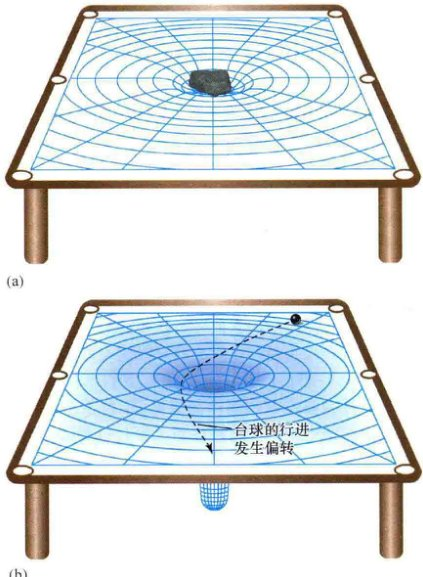(a) 当在一个台球桌的薄胶板上放置重物时，胶板会凹陷。同样，空间在任何大质量物体附近都会发生弯曲或扭曲。(b) 球在桌面上滚动时会被表面曲率所偏转，几乎与此类似，一颗行星的弯曲轨道也由太阳产生的弯曲时空的曲率所决定。
一些道具可以帮助你可视化这些想法。但请记住，这些道具不是真实的，只是帮助你掌握一些非常奇怪的概念的工具。想象一个台球桌的桌面由橡胶薄板打造，而不是由通常的硬质材料。图22.17表明，当有重物（如石块）置于其上时，这样的一个胶板会变得弯曲，石块越重，弯曲得越厉害。试着在台球桌上玩台球，你很快会发现，经过石块附近的球会被桌面的弯曲偏转，如图22.17(b)所示。台球不是被石块以任何方式所吸引的；相反，它们是对石块引起的胶板弯曲做出回应。类似地，任何在空间中运动的物质或辐射都被恒星在其附近时空产生的弯曲所偏转。例如，地球之所以沿着当前的轨道运动，是因为太阳在空间中产生了相对温和的曲率，地球在空间中自由下落。当曲率很小（即引力很弱）时，爱因斯坦和牛顿预测的轨道一样，即我们观测到的轨道。然而，随着引力质量的增大，两种理论开始出现分化。
弯曲的空间和黑洞
对黑洞的现代观念完全建立在广义相对论之上。尽管牛顿的经典引力理论可以充分描述白矮星和（较小程度的）中子星，但只有爱因斯坦的现代相对论才能正确解释黑洞奇异的物理性质。
物体质量的增加会加重空间的弯曲。如图22.18所示，我们看到空间（类似于橡胶板）的弯曲是如何变大的。按照这一说法，黑洞就是一个引力场变得无法被抗拒、空间极度扭曲的空间区域。在视界本身，由于曲率非常大，空间会发生自我“折叠”，导致其内部的事物被困和消失。

质量引起胶板（或空间）弯曲。当人们往胶板上的固定位置聚集时，平面的曲率越来越大。蓝色箭头表示信息可以从一个地方传播到另一个地方。(d) 人们最终被密封在球状物内，永远被困，并被切断了与外界的联系。
让我们考虑另一种类比。想象一个大家庭生活在一个巨大的橡胶板上——一种巨大的蹦床。他们决定举办一个聚会，在一个给定的时间在给定的地方聚集。如图22.18所示，有一个人仍然待在后面，不愿参加。通过沿着胶板表面推出“消息球”，她和她的亲戚保持联系。这些“消息球”类似于携带信息通过空间的辐射。
图22.18中从左至右，随着人们的聚集，橡胶板的凹陷越来越厉害。他们的累积质量使空间曲率越来越大。“消息球”仍然可以到达远处近乎水平空间内的孤独的人，但随着胶板变得越来越弯曲和拉伸，消息球越来越少地到达那里——如图22.18(b)和图22.18(c)所示。“消息球”必须爬出越来越深的凹陷。最终，当足够多的人到达约定地点后，质量将大到橡胶板无法承受。如图22.18(d)所示，胶板被挤捏成一个“球状物”，迫使人们遗忘并切断与外部孤独的幸存者的通信。这最终的阶段代表在聚会人群周围形成一个视界。
这一类比再次演示了黑洞如何完全将自己周围的空间扭曲，并将其内部与宇宙的其余部分隔离开来。这其中的基本观点是，视界一旦形成便具有减缓并最终停止信号向外传输，以及单向性等特性。这都与恒星产生的黑洞有着相似之处。
概念理解检查
❓ 牛顿和爱因斯坦的理论在描述万有引力方面有什么不同？
22.7 黑洞附近的空间旅行
黑洞不是宇宙真空吸尘器。它们并不会在星际空间游荡，吞没视线内的一切。物体在黑洞附近的轨道，与它在一颗质量相同的恒星附近的轨道是基本相同的。只有物体恰好在距离视界几个史瓦西半径（对于超新星爆发形成的典型的5~10倍太阳质量的黑洞，半径可能为15~100km）通过时，实际的轨道与牛顿引力和开普勒定律预测的轨道才会有显著差异。当然，如果有些物质确实恰巧落入黑洞，如果物体的轨道恰巧使它非常接近于视界，那么它将无法逃出黑洞。黑洞就像十字转门，允许物质只沿一个方向流动——向内。
因为黑洞至少还会从周围环境中吸积一些物质，它的质量随着时间的推移还会缓慢地增加，因此发生变化的还有它的视界半径。
潮汐力
流入黑洞的物质会受到巨大的潮汐力。如果一个不幸的人首先把脚陷入太阳质量大小的黑洞中，他会发现自己在纵向上被急剧地拉伸，而在横向上则被无情地挤压。在到达视界之前，他就会被撕裂，因为他脚部（更加靠近黑洞）的引力比头部的引力更大。在黑洞中和黑洞附近起作用的潮汐力，与引发地球上海洋潮汐和木卫一上壮观火山的基本现象一样。它们唯一的区别在于：黑洞附近的潮汐力远大于太阳系中其他任何已知的力量。
如图22.19所示（有一些艺术加工），等待落入黑洞的任何物质的是相同的命运。无论是气体、人还是空间探测器，落入黑洞后都会在纵向上被拉伸、横向上被压缩，并在该过程中被加速至很高的速度。所有这些拉伸和压缩的最终结果是，撕烂的碎片之间产生无数剧烈地碰撞，掉落的物质因相互摩擦而产生大量的热。当物质落入黑洞时，它会同时被撕裂并加热到高温。
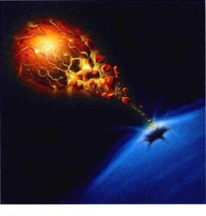任何落入黑洞的物质都将被严重扭曲并加热。这幅草图显示了被黑洞潮汐引力撕裂的一颗虚拟行星。
加热是如此高效，落入黑洞的物质在到达视界之前，便自发发出辐射。质量与太阳质量相当的黑洞将以X射线的形式释放能量。实际上随着物质落向黑洞，物质在黑洞外部的引力能被转化为热能。因此，与我们所期待的没有任何事物可以从中逃逸的定义相反，黑洞周围的区域将成为能量的来源。当然，当物质进入视界后，其辐射将不再能被探测到——它将永远无法离开黑洞。
接近事件视界
研究黑洞的一种安全方式，是进入环绕它的轨道，轨道要远远超过黑洞强大潮汐力发挥破坏性影响的范围。毕竟，地球和太阳系的其他行星都绕着太阳公转，但不会落入太阳中，也不会被太阳撕裂。黑洞周围的引力场本质上没有什么不同；然而，即使是从一个稳定的圆轨道近距离地观察黑洞，对人类来说也是不安全的。美国和苏联宇航员进行的耐力测试表明，人体无法承受大于地球表面重力10~20倍的压力。这一撕裂点会发生在距离10倍太阳质量的黑洞约3000km（它的视界半径约为30km）的地方。在这一距离以内，黑洞的潮汐效应会撕裂人体。
让我们假设用探测器向黑洞中心发送一个虚构的、坚不可摧的宇航员——机器人。我们在绕转的宇宙飞船上从一个安全距离进行观察，我们可以检查黑洞附近的空间和时间的本质。我们的机器人将是理论思想的有益探险家，至少是对视界附近的理论问题。越过视界后，机器人将无法传回它的任何发现。
例如，假设我们的机器人安装有一个精确的时钟和一个已知频率的光源。从远离视界外部的安全角度，我们可以用望远镜看时钟的频率，并测量我们接收到的光的频率。我们可能会发现什么？我们会发现，随着机器人接近视界，机器人发出的光红移会越来越大。即使机器人使用火箭发动机来保持静止，但仍可以检测出红移。这一红移并不是由光源的运动引起的，也不是由机器人落入黑洞的多普勒效应产生的。相反，它是由黑洞引力场引起的红移。爱因斯坦的广义相对论对它做出了预测，并称之为引力红移。
我们可以这样解释引力红移：根据广义相对论，光子受到引力的吸引。因此，为了摆脱引力源，光子必须要消耗一些能量。它们必须做功以离开引力场。它们完全不会减速，因为光子总是以光速运动，它们只是失去一些能量。由于光子的能量正比于其辐射频率，所以光损失能量意味着其频率一定会降低（或者说波长会变长）。换句话说，如图22.20所示，来自巨大物体附近的辐射将发生红移，红移的大小在某种程度上取决于物体引力场的大小。
光子从机器人上的光源飞向绕转的宇宙飞船，这将发生引力红移。从宇宙飞船上看起来，随着机器人宇航员靠近黑洞，一束绿色的光会变成黄色，然后变成红色。从机器人的角度看，光线将一直保持为绿色。随着机器人接近视界，光学望远镜将无法探测到光源发出的辐射。到达宇宙飞船的辐射波长会变长，需要用红外望远镜以及射电望远镜来探测。当机器人探测器离视界更近时，它发出的可见光辐射会进一步的红移；当辐射到达我们时，其波长会比传统射电波的波长更长。
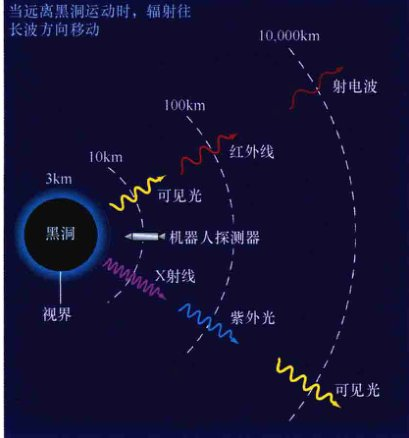要从黑洞附近的强引力场逃离，光子就必须消耗能量。颜色随之变化，频率也随之降低。这张图显示了引力红移对两束辐射的影响，分别是太空探测器上发出的可见光和X射线，是从1倍太阳质量的黑洞的视界附近发出的。
正好在视界上发出的光会被引力红移至无限长波长。换句话说，每一个光子都会使用它所有的能量来逃离黑洞的边缘。（机器人发出的）曾经的光，在到达处于安全距离上的宇宙飞船时，能量将消耗殆尽。从理论上讲，这种辐射仍然是以光速运动，它们会到达我们，但那时已经没有任何能量了。因此，原先发出的光辐射将红移至我们的认知范围之外。
现在，机器人的时钟又会如何呢？假设我们可以读出时间，但时间又会告诉我们什么呢？随着深入黑洞的引力场，时钟滴答的速率会有任何可观察到的变化吗？在安全的宇宙飞船上，我们会发现，任何接近黑洞的时钟都会比宇宙飞船上相同的时钟走得慢。时钟越接近黑洞，它看起来运转得越慢。在到达视界时，时钟看起来完全停止了，就好像机器人宇航员发现了不朽！所有的行动几乎都将冻结在一个时刻。因此，外部观测者将不会亲眼看见宇航员向下落入视界。这样的过程似乎永远不会停止。
机器人的时钟明显放缓的现象被称为时间膨胀。这是广义相对论做出的另一个与引力红移密切相关的明确预言。要了解它们之间的联系，假设我们使用我们的光源作为时钟，每通过一个波峰看作是一次“滴答”，时钟就这样以辐射的频率发出嘀嗒声。随着光的红移，光的频率下降，每秒钟通过远处观测者的波峰越来越少——时钟似乎慢了下来。这个思想实验表明，辐射的红移和时钟的放缓本质上是相同的。
然而，从坚不可摧的机器人看来，相对论没有预测到任何奇怪的现象。在向内落下的机器人看来，光源没有发生红移，时钟也完美地保持着时间。在机器人的参考系中，一切都是正常的，没有什么禁止它进入黑洞的史瓦西半径内，也没有物理规律约束物体通过一个视界。在通过视界时，没有障碍，也没有突然倾斜交叉；它只是空间中的一个假想边界。在通过足够大质量的黑洞（如我们看到的潜伏在银河系中心的黑洞）附近的视界时，旅行者可能甚至没有感觉——至少在他们试图从视界返回前是这样！
大多数天体的引力场太弱，无法产生任何明显的引力红移，虽然在很多情况下仍然可以测量到它的影响。在地球上和近地轨道卫星上进行的精妙实验，成功地检测到了因行星的微弱引力而产生的微小引力红移。太阳光发生的红移仅有约千分之一纳米。然而，一些白矮星对它们发出的光却有明显的引力红移。它们的半径比太阳小得多，因此它们的表面引力也比太阳的强得多。中子星应该在其辐射中体现出相当大的红移，但是很难区分引力、磁场以及环境对我们所观测到的信号的影响。
向下深入
你肯定想知道黑洞的视界内有什么。答案很简单：没人真正知道。然而，问题引起了理论学家的极大兴趣，因为它提出了现代物理学前沿的一些基本问题。
一颗完整的恒星可以缩小到一点并消失吗？广义相对论预言，如果没有任何什么与引力竞争，大质量恒星的核心残留物就将坍缩成一点，此时，它的密度和引力场是无限的。这样的点被称为奇点。然而，我们不应该太严肃地理解无限大密度的预测。奇点并非物理性的，它们总是预示着生成它们的理论的失效。换句话说，目前的物理定律只是不足以描述恒星坍缩的最后时刻。
目前，引力理论还是不完整的，因为它不包含对非常小尺度物质的正确描述（如量子力学）。随着恒星核心坍缩为越来越小的半径，我们最终会无法描述其行为，更不用说预测了。可能被困在黑洞中的物质从来没有真正到达过奇点，也许它只是接近这一奇异的状态，而随着量子引力论的发展，即广义相对论与量子力学的结合，我们总有一天会理解这一状态。
如前所述，我们至少可以估计当前理论仍有效的核心的最小半径。事实证明，达到那一阶段时，核心已经比任何基本粒子小得多了。因此，尽管完整描述恒星坍缩的终点很可能需要对物理定律进行大幅修正，但却是出于实用目的，对到达某一点的坍缩的预测仍是有效的。即使一个新的理论成功地以某种方式除去了中央奇点，但黑洞的外观或视界的存在仍不太可能会改变。对广义相对论的任何修改将只发生在亚微观的尺度上，而不是在史瓦西半径的宏观尺度上（千米级别）。
奇点是打破规则的地方，它附近可能会发生一些非常奇怪的事情。人们展望了许多的可能性——进入其他宇宙的通道、时间旅行以及创造新的物态——但它们中没有一个被证实，当然也没有被观测到。因为这是科学不再有效的地方，它们的出现会导致我们珍视的物理定律出现许多严重的问题，从因果关系（该观念认为原因应该先于结果，如果时间旅行是可能的，该观念将马上遭遇严重的问题）到能量守恒（如果物质能够通过黑洞从一个宇宙进入另一个宇宙，这一规律将被打破）。目前尚不清楚，未来通过一些包罗万象的理论来剔除中央奇点是否必然也会消除所有这些有问题的副作用。
科学可能出现的这些混乱令人困惑，一些研究者甚至提出了一个“宇宙审查原则”：大自然总是隐藏着任何奇点，例如在黑洞中心、视界内部发现的奇点。在这种情况下，即使物理学不再有效，也不会影响外面的世界，因此我们安全地与奇点可能产生的影响相隔离。如果有一天我们发现了所谓的裸奇点，即未被任何视界包围的奇点，会发生什么呢？相对论仍然有效吗？现在，我们对此一无所知。
我们赋予黑洞什么意义？黑洞以及它周围发生的所有奇怪现象真的存在吗？理解这些奇异天体的基础是质量使空间弯曲的相对论概念。我们发现这一观点已经很好地描述了现实，至少对恒星和行星产生的弱引力场是如此（见详细说明11-1和探索11-2）。质量越集中，时空越弯曲。显然，奇怪的是观测结果。这些结果是广义相对论不可或缺的一部分，而黑洞是其中最引人注目的预测之一。只要广义相对论是宇宙中正确的引力理论，黑洞便是真实的。
22.8 黑洞的观测证据
除了理论推理，黑洞还有任何观测证据吗？我们能证明这些奇异的、不可见的天体真的存在吗？
凌星现象
我们认为，可能让我们发现黑洞的一种方式是，观测它的凌星现象（从恒星前面通过）。但不幸的是，观测这一事件非常困难。当直径约12,000km的金星凌日时，几乎很难被发现。所以当一个10m宽的天体掠过遥远的恒星时，会完全不可见，无论是利用当前的设备还是可预见的未来的任何设备。
实际上，我们面临的情况比上文建议的还要差。假设我们足够接近恒星，能清晰看见凌星黑洞的圆盘，之后的观测效果也不是一个小黑点叠加在明亮的背景上；相反，背景的星光在经过黑洞射向地球时会被偏转，如图22.21所示。偏转的效果与遥远的星光通过太阳边缘时的弯曲效果是一样的。后者已经在过去几十年的日食期间被重复观测到（见详细说明11-1）。在黑洞附近，光线会发生更大的偏转。其结果是，黑洞从明亮伴星前穿过的图像不是一个清晰的、规则的小黑点，而是一幅即使从近处也无法分辨的模糊图像。

体积小但质量巨大的黑洞周围的引力使光线弯曲，因此黑洞叠加在其恒星伴星上的图像不可能是一个黑点叠加在明亮的背景上。
概念理解检查
❓ 为什么你永远不会真正见证物体向内越过黑洞的视界？
双星系统中的黑洞
发现黑洞的一个更好的方法是寻找它对其他物体的影响。我们的银河系中栖息着许多双星系统，它们中只有一个成员可以被看到。回忆我们在6.7节对双星系统的研究，只需要观察一颗恒星的运动就能推断是否存在一颗看不见的伴星，并测量它的一些属性。在大多数情况下，看不见的伴星小而暗，它们只不过是隐藏在O型或B型主序伴星光芒中的一颗M型星，或者被尘埃或其他碎片所笼罩，即使是目前最好的设备也看不见它们。在这两种情况下，看不见的天体不是一个黑洞。
然而，一些密近双星系统的特征表明，其成员之一可能是黑洞。20世纪70年代和80年代由地球轨道卫星完成的一些非常有趣的观测显示，双星系统的无形成员会释放大量的X射线。发出辐射的物体的质量被测定为几倍太阳质量，因此我们知道，它不会是简单的一颗小而暗的恒星。X射线源的可见辐射也不太可能被恒星周围尘土飞扬的碎片所遮挡——对于我们所感兴趣的系统，双星系统的强烈辐射可能早已把碎片驱散进了星际空间。
在天鹅座，有一个受到特别关注的双星系统。图22.22(a)显示了天鹅座的一部分天区，天文学家有非常合理的证据认为，这里有一个黑洞。矩形方框标出了科学家感兴趣的天体系统，它距离地球大约6200光年。黑洞候选体是一个名为天鹅座X-1的X射线源，20世纪70年代早期，乌呼鲁 (Uhuru) 卫星对它进行了详细地研究。这个双星系统的主要观测特点如下：
- X射线源的可见伴星，星表名为HDE 226868的B型蓝超巨星在发现天鹅座X-1几年后被确认。假设伴星位于主序，我们可知它的质量必须是太阳质量的25倍左右。
- 光谱观测表明，双星系统的轨道周期为5.6天。结合这一信息和对可见伴星轨道速度的进一步光谱测量，天文学家估计系统的总质量大约为35倍太阳质量，这意味着天鹅座X-1的质量大约是10倍太阳质量。(6.7节)
- 对谱线多普勒红移的其他详细研究表明，热气体从明亮的恒星流向一颗看不见的伴星。(3.5节)
- 天鹅座X-1周边的X射线辐射意味着高温气体的存在，其温度也许高达几百万开尔文 [参见图22.22(b)]。
- X射线辐射的快速时变意味着天鹅座X-1的X射线辐射区域必须非常小——事实上，不到几百千米。推理基本上与22.4节中对伽马射线暴的讨论相同：已经观测到天鹅座X-1发出的X射线的辐射强度在仅为毫秒的时间尺度上变化。为了让这一时变不会被光穿过辐射源的传播时间所模糊，天鹅座X-1的直径不能超过1光毫秒或300km。
这些性质表明，无形的X射线辐射伴星可能是黑洞。X射线辐射区域可能是物质从可见恒星螺旋下降到看不见的伴星时形成的吸积盘。X射线辐射的快速变化表明，看不见的伴星一定是致密天体——中子星或黑洞。双星成员中的黑暗伴星的质量极限倾向于后者，因为中子星的质量不能超过3倍太阳质量。图22.23是一位艺术家创作的这个有趣天体的概念图。请注意，来自于可见恒星的大部分气体最终进入了环形的吸积盘。随着气体流向黑洞，它会变得过热，并发出X射线。在被永远困于视界内部前，我们可以观测到这些X射线辐射。
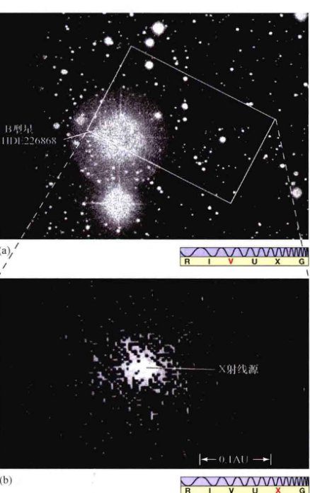(a) 照片中最亮的恒星（标注了它的星表序号）是双星系统的一个成员。它的看不见的伴星叫天鹅座X-1，是黑洞的优先候选体。(b) 图(a)中方框区域的X射线图像。由于无法直接看到X射线，天鹅座X-1发出的X射线辐射被卫星上的探测器捕捉到。
现在，我们已经知道了其他一些黑洞候选体。例如，在大麦哲伦云发现的第三个X射线源LMC X-3是一颗看不见的天体，它和天鹅座X-1一样绕转一颗明亮的伴星。与天鹅座X-1类似的推理表明，LMC X-3质量是10倍太阳质量。一质量如此巨大的天体只能是黑洞。同样，X射线双星系统A0620-00包含一个无形的致密天体，它的质量是太阳质量的3.8倍。总的来说，也许我们的银河系以及附近有20多个已知的天体可能就是黑洞。其中，天鹅座X-1、LMC X-3，以及A0620-00的呼声最高。
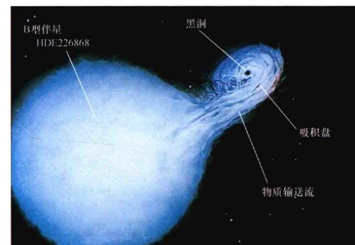艺术家笔下的双星系统概念图，系统中包含一颗巨大的、明亮的、可见的恒星，以及一个看不见的向外辐射X射线的黑洞。（与图10.2相比）这幅画基于从天鹅座X-1获得的详细观测数据。
探索 11-2 引力波：探索宇宙的新窗口
电磁波是常见的日常现象。现代引力理论，即爱因斯坦的引力理论，也预测了在空间传播的波。引力波是与引力相关、与电磁波对应的一种波。引力场强度的变化会引起引力辐射。在任何时间，任何有质量物体的加速都会以光速发出引力波。引力波应该会在它通过的空间内产生小的扭曲。与电磁作用力相比，引力是一种极其弱的相互作用力，所以预计这些扭曲会非常小——实际上，比原子核的直径还要小得多。然而，许多研究人员认为，这些微小的扭曲是可以测量的。
最有可能产生在地球上能探测到的引力波的天体，是包含黑洞、中子星或白矮星的密近双星系统。
1974年，天文学家发现了一个不寻常的脉冲双星系统（Hulse-Taylor binary），两颗中子星互相绕转。观测表明其轨道正在缩小，这与相对论假设的引力波带走它们的一部分能量所导致的轨道缩小速度一致。2016年，LIGO宣布首次直接探测到了来自于两个黑洞并合的引力波信号。
星系中的黑洞
也许黑洞最有力的证据并非来自于我们星系中的双星系统，而是对包括银河系在内的许多星系中心的观测。利用从射电到紫外波段辐射的高分辨率观测，天文学家已经发现了，许多星系中心附近的恒星和气体围绕着一些非常大质量的、看不见的对象在非常迅速地移动。从牛顿定律得出的质量范围从数百万到数十亿倍太阳质量不等。
这些星系中心的激烈能源释放以及辐射的短时标波动，说明存在巨大的致密天体。此外，如图22.24所示的射电星系，这些天体也被观测到有延展的喷流，让人想起与中子星和黑洞相关的喷流，虽然前者远大于后者。主要的（而且是目前唯一的）解释是，这些能量巨大的天体的能量来自于中央超大质量黑洞对周围恒星和气体的吸积。发出射电辐射的喷流位于黑洞周围秒差距大小的吸积盘内。
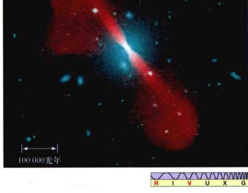许多星系被认为其中心栖息着大质量的黑洞。事实上，宇宙中存在黑洞的最好证据出现在星系核中。图中以伪彩色所示的是星系3C296。蓝色显示恒星在中央椭圆星系的分布，红色显示巨大的射电辐射喷流，它延伸了500,000光年。
这样，天文学家知道了质量与太阳质量相当的“恒星级”黑洞，以及几百万或几十亿倍太阳质量的超大质量黑洞。如前几章所讨论的，前者是恒星演化的产物；在本书的第四部分我们将看到，后者成长于星系的中心。这二者之间还有什么吗？2000年，X射线天文学家报告了一些情况，正是他们长期以来寻找的、却始终不见其踪影的两种类型的黑洞之间缺失环节的第一个证据。图22.25显示了一个极不寻常的星系M82，它目前正经历着一场广泛而激烈的恒星形成。观测表明，一些X射线源显然与高密度、年轻的星团有关。理论学家推测，在这些星团密集的核中，大质量主序星之间的碰撞会导致极大质量且非常不稳定的恒星的增长失控，而后发生坍缩并形成中等质量的黑洞。
图22.26显示了仙女星系中的球状星团G1，它是目前“近邻”星团中栖息有中等质量黑洞的最佳候选体。星团中心附近恒星的特殊轨道说明，存在一个质量为太阳质量20,000倍的黑洞，对星团的射电和X射线波段观测与对星团中心如此大质量的天体发出辐射的预测是一致的。然而，理论与观测仍都存有争议。
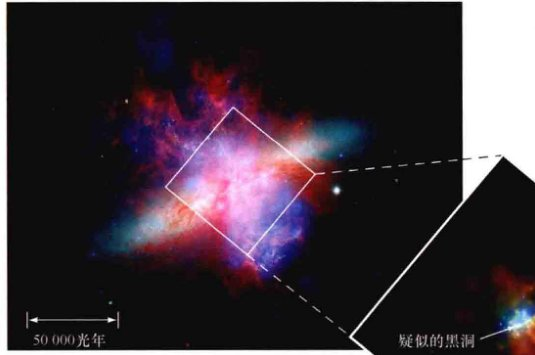对星爆星系M82中心的X射线观测揭示了一系列的亮源，它们被认为是中等质量黑洞吸积物质的产物。这些黑洞质量在100~1000倍太阳质量之间。
黑洞存在吗？
你可能已经注意到了，识别一个黑洞其实是靠淘汰法。不太严谨的说法是：“天体X致密且质量巨大。我们不知道有其他什么东西能如此小且质量大。因此，推断天体X是一个黑洞。”对于在星系中心观测到的（被推断为）致密的大质量天体，没有可行的替代方案意味着黑洞假说已经被天文学家广泛接受。然而，天鹅座X-1以及另一个双星系统中疑似的恒星质量黑洞，它们的质量相对接近于中子星与黑洞之间的临界线。考虑到目前观测和理论的不确定性，可能也可以想象它们仅仅是昏暗的、致密的中子星，而不是黑洞。
大多数天文学家认为这是可能的，但也突出了一个问题：很难明确区分一个10倍太阳质量的黑洞和一个10倍太阳质量的中子星（如果它能以某种方式存在）。两个天体都会以相同的方式影响伴星的轨道；它们都会从伴星表面撕扯物质，并且都会在周围形成吸积盘并释放出强烈的X射线（尽管许多研究人员认为，吸积盘的细节会有很多区别，中央天体的性质可以通过观测来确认）。
所以，真的发现黑洞了吗？尽管存在不确定性，但答案或许是肯定的。科学中的怀疑论是合理的，但只有最顽固的天文学家（他们确实存在！）会怀疑支持黑洞的诸多理论推理。黑洞在关于恒星演化、伽马射线暴，以及星系结构与演化的理论中扮演着重要角色，这是黑洞在天文学中被广泛接受的明确标志。

观测表明星团中心存在一个中等质量的黑洞。[美国国家航空航天局 (NASA)]
我们是否可以保证，未来对致密天体理论的修正不会使我们的一些或所有推理变得无效吗？我们不能。但在天文学的许多领域都可以做出类似的陈述——实际上，任何科学领域的任何理论都是如此。我们认为，虽然黑洞很奇怪，但它们已经在我们的银河系以及银河系外被探测到了。也许，未来某一天，太空旅行者将访问天鹅座X-1或银河系的中心，并（仔细）亲自检测这些结论。在那之前，我们将不得不继续依靠改进理论模型和观测技术来指导我们对黑洞这一神秘天体的讨论。
概念理解检查
❓ 天文学家是如何“看见”黑洞的？
章节回顾
小结
- 核坍缩超新星可能留下遗迹——被称为中子星的超压缩物质球。中子星非常致密，预测它们在形成时非常热、具有强磁场并且快速自转。
- 根据灯塔模型，由于中子星具有磁性并且在自转，所以它们会将爆发的电磁能量送入太空。被强磁场束缚的带电粒子会形成辐射束。如果我们从地球上可以看到辐射束，那么我们称其辐射源为脉冲星。
- 双星系统中的中子星可以从它的伴星中吸收物质，形成一个吸积盘。吸积盘的物质在到达中子星之前会被加热，使吸积盘成为一个强X射线辐射源，导致X射线暴源的形成。
- 伽马射线暴是在天空中观测到的能量巨大的伽马射线闪耀。解释这些爆发的主要理论模型假设它们源自于遥远双星系统内中子星的剧烈并合，或者是非常大质量的恒星在一次“失败的”超新星爆发后，再次坍缩并随后发生的剧烈爆发。
- 爱因斯坦的狭义相对论描述了接近光速运动的粒子的行为。现代取代牛顿万有引力的是爱因斯坦的广义相对论，它将引力描述为时空在质量作用下的扭曲或弯曲。
- 中子星的质量上限是3倍太阳质量。超过这一上限，恒星就将无法抵抗其自身的引力，并坍缩形成黑洞，一个没有任何事物能够逃逸的空间区域。黑洞周围半径等于史瓦西半径的假想球面叫作视界。
- 在一位遥远的观测者看来，从一艘落入黑洞的宇宙飞船上发出的光线会产生引力红移。同时，同一艘宇宙飞船上的时钟会产生时间膨胀——随着飞船接近视界，时钟看起来会走得越来越慢。
- 一旦物质落入黑洞，它将再也无法与外界通信。然而，在它进入黑洞的过程中，会形成吸积盘并辐射出X射线。黑洞的最佳候选体是含有一个致密X射线源的双星系统。位于天鹅座的天鹅座X-1是一个被深入研究的X射线源，它是一个存在已久的黑洞候选体。许多星系中心存在着超大质量黑洞。
复习与讨论
- L01 形成中子星的过程是如何决定它的大部分基本性质的？
- L02 什么是脉冲星？它们与中子星有什么联系？
- L03 对于毫秒脉冲星的快速自转，最好的解释是什么？
- L04 为什么天文学家认为伽马射线暴非常遥远而且能量巨大？
- L05 运用关于逃逸速度的知识来解释为什么说黑洞是“黑”的。
- L06 根据狭义相对论，光速有什么特殊之处？
- L07 什么是视界？当人们靠近视界并落入黑洞时，什么事情会发生在他们身上？
- L08 POS 哪些证据说明黑洞的质量比太阳要大得多？
概念自测：选择题
- 中子星的大小与什么相仿？(a) 一辆校车；(b) 一个美国城市；(c) 月亮；(d) 地球。
- 中子星巨大的引力主要是因为其较小的半径以及：(a) 较快的自转速率；(b) 强磁场；(c) 大质量；(d) 高温度。
- 双星系统内中子星的X射线辐射主要源自：(a) 中子星本身的高温表面；(b) 中子星周围吸积盘中被加热的物质；(c) 中子星的强磁场；(d) 伴星表面。
- 根据图22.11，伽马射线暴被观测发生于：(a) 主要是太阳附近；(b) 整个银河系；(c) 几乎平均分布在整个天空；(d) 脉冲星附近。
- 黑洞产生于初始质量为多少的恒星：(a) 小于太阳质量；(b) 在太阳质量的8倍～25倍之间；(c) 8倍太阳质量；(d) 超过25倍太阳质量。
问答
- 刚体的角动量与物体的速度和物体半径平方的乘积成正比。根据角动量守恒定律，请估计一颗每天自转一圈的坍缩中的恒星内核的半径如果从10,000km坍缩至10km后，自转速度将是多少？
- 如果你完全由密度为 $3 \times 10^{17} kg/m^3$ 的中子星物质组成，你的质量是多少？（假设你的平均密度是 $1000 kg/m^3$。）将你的答案与一颗直径为10km的典型岩质小行星进行对比。
- 请计算一颗质量为1.4倍太阳质量、半径为10km的中子星的表面引力加速度和逃逸速度。
- 5000 Mpc远的一次伽马射线暴以伽马射线的形式各向同性地释放出 $10^{45}$ J的能量，每个光子的能量为 250 keV。（详细说明3-1）如果地球轨道上一个有效面积为 $0.7 m^2$ 的仪器探测到它，那么会有多少伽马射线光子进入探测器？
实践活动
协作项目： 本书主要讨论了最简单类型的黑洞——不带电、不自转的史瓦西黑洞，而旋转的克尔黑洞在天文学中也极其重要。将你的团队分为两组，分别通过网络研究史瓦西黑洞和克尔黑洞的性质。结合两者的研究，说明两种黑洞的异同之处。
个人项目： 寻找天空中最著名的黑洞候选体——天鹅座X-1的星等为9等的伴星。即使没有望远镜，也很容易找到天鹅座X-1所在的天区。天鹅座的恒星组成一个明显的星群形状——一个大十字。